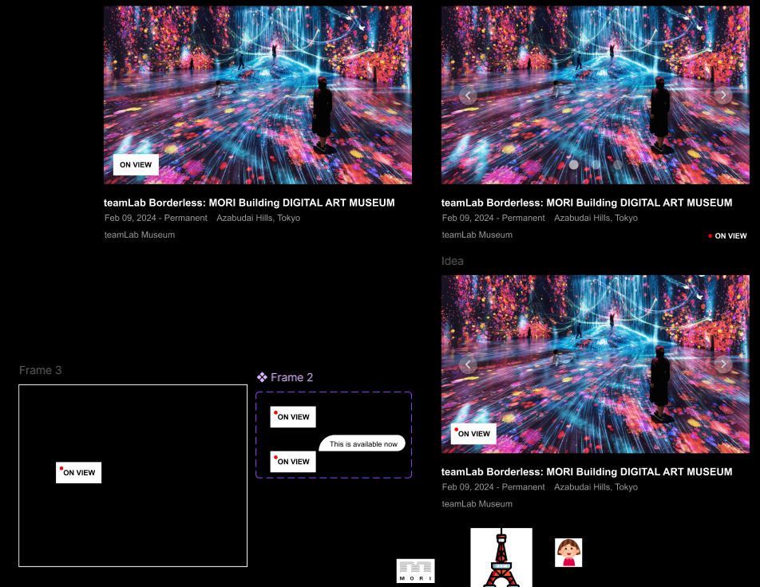

teamLab Microinteractions Case Study
The Overview
teamLab's exhibition cards provide visually rich previews, but their limited interactivity forces users to click in and out of pages to compare installations, creating unnecessary friction for exploration. Over 10 weeks, I redesigned this experience by enhancing the card with predictive, intuitive microinteractions that let users understand more at a glance.
Through three phases, Alpha, Beta, and Final, I introduced features such as a glowing hover state for focus, an infinite looping carousel, directional arrows, page indicators, and a responsive popup for the “ON VIEW” label. The final solution creates a smoother, more expressive browsing experience that reflects teamLab's immersive brand and enables users to preview exhibitions more efficiently and enjoyably.
Context & Challenge
teamLab provides a wide range of exhibitions all around the world. Through their expansive visuals from each exhibit, users can expect what to happen before commitment. But for users to see more about something, they would have to go through the extra step of clicking into it and then go back to the previous screen to see other options. What if there was an alternative?
Predictive and enjoyable interactive designs allow users to have a better experience when engaging with a website. In this 10-week project, I tackled issues users experience when browsing through different exhibitions to see. Through prototyping and development, a more interactive experience with the exhibition card is formed.
Process & Insight
Target Audience
The target audience consists of visitors exploring teamLab's digital exhibitions online. They are curious, visually driven, and interested in interactive art experiences. These users rely on product cards to quickly understand an artwork, preview its details, and decide whether to explore further. They value smooth, intuitive interactions, clear hierarchy, and microinteractions that feel expressive and aligned with teamLab's immersive brand personality.
Phases: Alpha, Beta, Final
During this iterative process in designing the final product, I went through Alpha, Beta, and Final phases of design and development.
In Alpha, I determined the current microinteractions the exhibition card provided and replicated it in code.
Microinteraction Include:
- exhibition card
What I Discovered:
- the structure of the exhibition card when I coded it
- how to keep the image inside of it's container when hovered on
- layering with absolute and relative positioning of objects
In Beta, I prototyped and created new features that would enhance the experience for users. I then took that design through development.
Microinteractions Include:
- exhibition card
- on view box
- page indicators
What I Discovered:
- a glow around the card helps users locate what they are currently on and brings attention to them
- because the "ON VIEW" box looks like a button, I redesigned it to fit its intended intention
- a carousel/slider lessens the need to go back and forth between pages to see what is offered
- page indicators help with knowing how many images there are and the positions of them
Final
In this phase, I built upon my Beta prototype and fleshed out my microinteractions in the design and development.
Microinteractions Include:
- exhibition card
- on view box
- page indicators
- left arrow
- right arrow
What I Discovered:
- left and right arrows gives clarification on where images will come in from
- if the carousel/slider doesn't loop infinitely, it creates a disruption in the user's experience even if the transition isn't sudden or snappy
Design Sketches
teamLab's intention with the "ON VIEW" box is for users to know that the exhibit is currently live and available for booking. However, the shape of it looked like a interactable button and didn't express the intention it's suppose to.
I created a couple of designs to see what would be a better alternative to inform users intuitively.

I wanted to take advantage of the fact that users think the "ON VIEW" box is a button. Users would naturally move their cursor over to try and click on it, so I created a popup when they hover over it. Since teamLab is an exhibition site that showcases immersive art experiences, I wanted to hone in on their brand with the popup animation so users can enjoy their experience while on the website. It gives them an introduction to what they will experience before getting the real thing.
Code/Development
I made a carousel/slider that loops infinitely in both directions. Think of it like a circular conveyor belt. When you reach the the "end", you're actually already back at the beginning without realizing it.
Photo 1 → Photo 2 → Photo 3 → Photo 1 → Photo 2
(invisible jump back)
What It Does:
- slides smoothly between images
- never stops/loops infinitely
I also made an animation that emphasizes the popup instead of it simply easing in to give it a more lively feeling, with a hint of surprise for users.
The Solution
Solution:
- the card will light up when it's hovered so users focus on it better
- the card has a carousel/slider so users can view it without the additional hassle of transitioning between pages
- left and right arrows allows users to transition between images
- page indicators allow users to know what image they are on
- "ON VIEW" box will have a popup animation when hovered over so users can enjoy their experience while on the website
The Results
In my 10 weeks, I determined what could be done to improve the user's experience with the site by addressing current issues and adding more features into the exhibition card. Through ideating, designing, prototyping, and finally development, I created a fully functioning exhibition card that teamLab can take in to enhance their website with documented microinteractions to assist them.
Coded Out Exhibition Card: